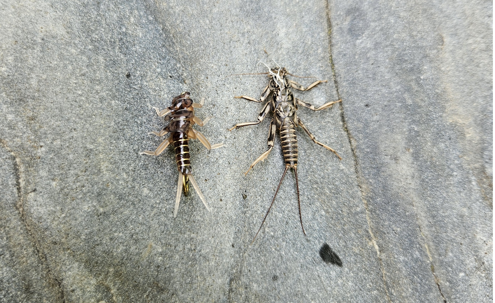

As a Vermont local, I grew up pocketed in the Green Mountains with productive trout rivers just 20 minutes in every direction. I began trout fishing at the age of 3 using a simple spinner rod and worms. When I turned 10, I was gifted my first fly rod.
As a guide, my approach is as scientific as possible, mirroring my career as an engineer. I like to break fishing into a simple series of problems and solutions.
Problem: The fish are feeding but not on what is tied to my tippet.
Solution: Take a sample of the river at different water columns to see what bugs are present and what stage of their life cycle they are in.
Problem: I ran out of beer.
Solution: Ask my guide to drive to the gas station to get more.
I tie all of my own flies and have developed several original patterns based on detailed study of aquatic insect life (entomology) in Vermont’s river ecosystems, increasing the odds of success on the river.
As a University of New Hampshire graduate, I was an active member of the UNH Fly Fishing Club, where I taught fellow alumni how to cast and learn the fundamentals of a fly rod. I’ve also helped maintain local rivers in southern New Hampshire by assisting the Three River Stocking association maintain the local trout population.
Additionally, I’ve collaborated with the Vermont Fish and Wildlife biology division at the graduate level to develop machine learning models that help predict Vermont river E. coli levels based on other biological factors — supporting healthier river ecosystems.
When I’m not guiding, my passion for hands-on building extends to crafting custom bamboo fly rods and designing 3D-printed fly reels tailored to my own specifications and fishing needs.
- Chris Boyer